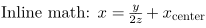
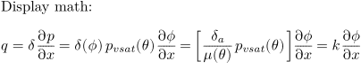
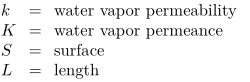
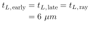

Here some short examples of how to use math with the newmat module, which "collects macros that TeX users kind of expect to be available when typesetting math," according to the documentation. These currently include the \frac family (\frac, \dfrac, \tfrac, \binom, etc.), the \QED symbol, the \boxed command, and the subarray, substack, and smallmatrix environments, along with a few others. At one time it also included the \text command, though that has now been moved to the core.
Inline maths:
-
\usemodule[newmat] Inline math: $x = \frac{y}{2z} + x_{\text{center}}$
produces
- 
Display math:
-
\usemodule[newmat] Display math: \startformula q = \delta \frac{\partial p}{\partial x} = \delta(\phi) p_{vsat}(\theta) \frac{\partial \phi}{\partial x} = \left[ \frac{\delta_a}{\mu(\theta)} p_{vsat}(\theta) \right] \frac{\partial \phi}{\partial x} = k \frac{\partial \phi}{\partial x} \stopformula
- 
Legends:
-
\usemodule[newmat] \startlegend \leg k \\ water vapor permeability \\ \\ \leg K \\ water vapor permeance \\ \\ \leg S \\ surface \\ \\ \leg L \\ length \\ \\ \stoplegend
- 
Aligned display math:
-
\usemodule[newmat] \startformula\eqalign{ t_{L,\text{early}} & = t_{L,\text{late}} = t_{L,\text{ray}} \cr & = 6\ \mu m \cr }\stopformula
- 
(These samples are adapted from an example sent to the mailing list on 2005-06-28 by Wolfgang Zillig.)